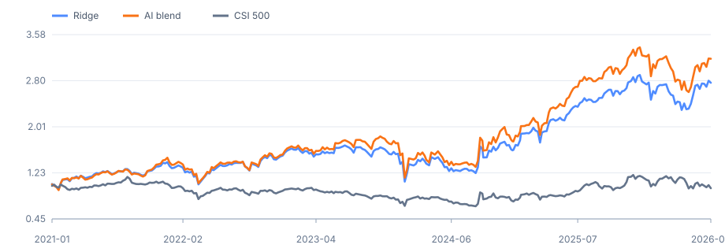

A 股点时研究数据
Zhejiang University · Hangzhou
从模型训练走到 可审计的研究结论
我是闫雨昊，一名具有微电子与计算机交叉背景的研究者。目前就读于浙江大学计算机科学与技术学院，关注 AI × Quant Research、基础模型训练与智能系统。
我喜欢把开放问题拆成数据、建模、实验和审计链路，并主动追问：结果是否泄漏？是否能复现？成本和边界在哪里？
参数模型端到端预训练
多模态导航任务
奖学金与竞赛荣誉
01 · ABOUT
研究不是一条漂亮曲线，
而是一条完整证据链。
我的经历横跨硬件系统、具身智能、LLM 训练和量化研究。不同主题背后的共同方法，是把模糊目标转化为可以验证、比较和复现的实验。
Point-in-time
尊重信息发生的时间，先消除泄漏，再讨论模型效果。
End-to-end
愿意从数据处理、训练、部署一路走到结果解释与文档。
Evidence first
善用 AI 工具提高效率，但最终以代码、测试和实验结果作答。
02 · SELECTED WORK
精选项目
可访问仓库与当前最能代表研究方法的工作。
FEATURED · QUANT
A 股点时多因子与机器学习选股研究
从历史证券快照、可执行标签和 15 个因子出发，完成 purged walk-forward、Ridge/HGB 排序、Top-200 缓冲组合，以及成本、规模、涨跌停和 ADV 容量审计。
- 19.9%Ridge 20bp 后年化
- 291共同历史样本外周
- 47研究产物审计项
Finding Ridge 相对 CSI 500 超额的块 bootstrap 区间高于零；HGB-Ridge 收益更高，但增量区间跨零，因此不宣称显著胜出。
PythonPoint-in-timeWalk-forwardBootstrap
查看研究仓库 ↗
Historical OOS2021–2026

RidgeHGB + RidgeCSI 500
LLM SYSTEMS
1B
LLM From Scratch
在 8×24GB RTX 3090 节点上，以 LLaMA Decoder-only 与 ZeRO Stage 3 完成约 1B 参数、1B token 的端到端预训练。
- 流式数据处理、精确/模糊去重与二进制分片
- Tokenizer、定长样本打包与可恢复训练
- 训练周期约一周
ANDROID · PRODUCT
MoneyTracker 智能账本
自动解析支付通知与银行短信，使用五层自进化分类引擎完成本地消费分类，并支持预算、统计、备份和深色模式。
KotlinMVVMRoomWorkManager
全部项目与研究实践
公开代码、在研复现与跨学科工程项目。
LLM RESEARCH · IN PROGRESS
YuFormer
面向完整 LLM 研究流程的个人研究项目，覆盖数据、Tokenizer、模型架构、预训练、SFT 与 RL；当前推进预训练和 scaling 实验。
GitHub ↗EMBODIED AI · LEAD
多模态具身导航
基于 OmniGibson 与 Isaac Sim 搭建类 Gym 环境，生成 5,000+ 导航任务与参考轨迹，实现融合文本、图像、声音和状态的 PPO 训练框架。
Research projectROBOTICS · IN PROGRESS
Microduck 双足机器人复现
参与开源双足机器人复现，负责运动策略模型训练、推理调用和配套软件开发，推进训练—推理—控制链路联调。
Model training + softwareEDGE AI · LEAD
激光除蟑螂系统
训练 mAP>0.9 的检测模型并部署到 Raspberry Pi 5；结合 ESP32、电机、激光与闭环 PID，实现 10+ FPS 和 5mm 级定位。
Vision + embedded controlKNOWLEDGE SYSTEM · OPEN SOURCE
見微 / Jianwei
基于 Astro + MDX 的内容优先知识实验室，支持数学公式、三级内容模型、多主题与字体切换，并部署于 Cloudflare Pages。
CREATIVE WORKFLOW
AI 视频与音乐工作流
搭建 AI 视频短剧创作与音乐二创工作流，组合多种生成式工具完成从创意到内容生产的工程化流程。
Creative engineering03 · EXPERIENCE
经历与教育
研究兴趣由硬件系统逐步延伸到模型训练、具身智能与量化研究。
RESEARCH INTERNSHIP
华为技术有限公司
终端 AI Lab · 研究实习生
- 围绕 JEPA 路线世界模型研究，引入 SIGREG 正则抑制表征塌缩。
- 量化 next-latent prediction 下的多步 rollout 误差传播。
- 构建离散/连续动作环境，研究跨环境动力学泛化、in-context learning 与 scaling。
MASTER
浙江大学
计算机科学与技术学院 · 硕士
BACHELOR
中山大学
微电子科学与工程 · 专业排名 8/104
04 · HONORS
奖项与荣誉
16 项奖学金与竞赛荣誉，完整保留而不合并隐藏。
01 奖学金与综合荣誉
- 国家奖学金National Scholarship
- 中山大学一等奖学金First-Class Scholarship
- 华为奖学金Huawei Scholarship
- 中山大学二等奖学金Second-Class Scholarship
- 学科竞赛与科研专项奖学金Academic Competition & Research
- 中山大学一等奖学金First-Class Scholarship
- 学科竞赛与科研专项奖学金Academic Competition & Research
- 中山大学荣芳捐赠奖学金Rongfang Scholarship
02 竞赛奖项
- 全国一等奖全国大学生集成电路创新创业大赛China College IC Competition
- Finalist美国大学生数学建模竞赛COMAP MCM/ICM
- 全国二等奖全球校园人工智能算法精英赛Global Campus AI Algorithm Elite Competition
- 全国二等奖传智杯人工智能创新应用大赛ChuanZhi Cup
- 全国三等奖第八届全国大学生集成电路创新创业大赛National Finals
- 华南二等奖中国高校计算机大赛（C4）AI Innovation Application Track
- 三等奖AI for Science 大湾区科技竞赛AI4SC
- 华南二等奖全国大学生计算机能力挑战赛China University Computer Ability Challenge
05 · CONTACT
一起讨论一个值得验证的问题。
如果你正在做量化研究、基础模型训练或智能系统，欢迎联系我交流研究与实习机会。